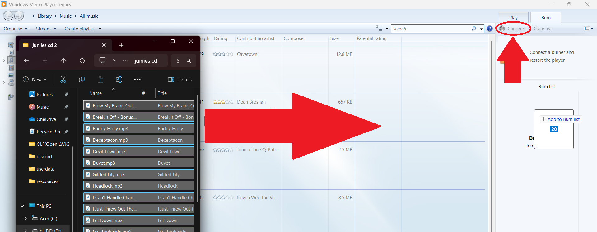

Open and insert your standard CD+R or CD-R disk into your optical media dive (disk drive). If you do not own one, now would be the perfect time to buy one.
Press the windows/super key and search/type Windows Media Player Legacy
Open Windows Media Player Legacy.
You should now have a screen like this
Open and insert your standard CD+R or CD-R disk into your optical media dive (disk drive). If you do not own one, now would be the perfect time to buy one.
Click on the burn tab in the menu.
Next drag your mp3's (or another audio file/type) into the burn menu.
You should now have a screen similiar to the one shown above, these means your cd is burning!
After the burning process is completeted it will automaticaly start playing, if not eject and insert the cd and if that still fails look in file explorer and double click the first track.